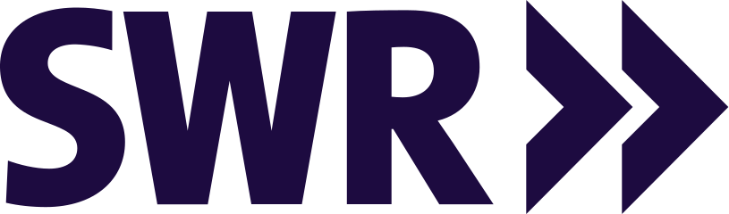

Terminaro
Terminbuchung für kleine Betriebe. Kalender anbinden, Verfügbarkeit festlegen, Kundinnen in Sekunden buchen lassen, ohne Konto.
terminaro.eu →Wir bauen Produkte, die wir selbst nutzen, und geben die Werkzeuge dahinter als Open Source weiter. Zwei Gründer, keine Zwischenebenen, nachprüfbare Arbeit.
Teams, die mit uns gearbeitet haben



Jedes Produkt löst eine Aufgabe, die wir selbst hatten. Nichts davon ist eine Suite.
Terminbuchung für kleine Betriebe. Kalender anbinden, Verfügbarkeit festlegen, Kundinnen in Sekunden buchen lassen, ohne Konto.
terminaro.eu →Übersetzungen ausliefern statt Tickets: die verwaltete Übersetzungsschicht über unserem Open-Source-Kern Palamedes.
Palamedes, der offene Kern →Wird hier angekündigt, sobald es so weit ist. Bis dahin gilt: Wir reden über Dinge, die es gibt.
Die Zahlen kommen aus unserem Metrics-Dienst, nicht aus einer Pflegeliste. Was hier steht, lässt sich auf GitHub, npm und crates.io nachprüfen.
Von Rust-Engines bis Agenten-Skills, jedes mit Lizenz, Tests und Doku.
Reguläre Ausdrücke, Markdown, Syntaxhervorhebung, Übersetzungskataloge und mehr, in Rust.
Praxiswissen für Coding-Agenten, von Produkt bis Delivery.
„Ihre Lösung war unglaublich elegant: Sie nutzte robuste Open-Source-Technologien, funktionierte reibungslos und setzte neue Maßstäbe im Bereich DevX.“
Sebastian Fastner und Sebastian Werner bauen seit 2014 Software, die relevant bleibt. Projekthilfe gibt es bei Sebastian Consulting.